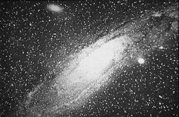
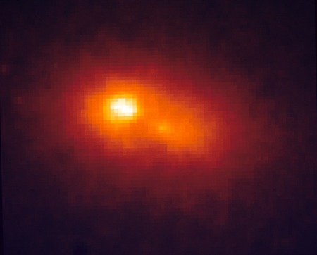
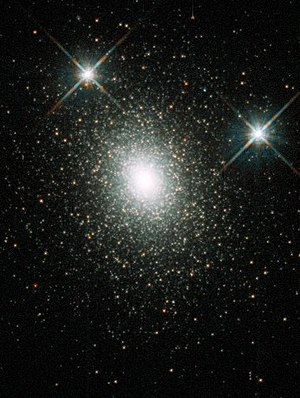
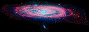
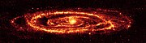
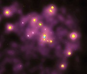
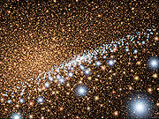

Галактика Андромеди
Галактика Андромеди (Туманність Андромеди, Мессьє 31, М31, NGC 224 ) — найближча до Чумацького Шляху велика галактика, розташована в сузір'ї Андромеди і віддалена від нас, за останніми даними, на відстань 772 кілопарсек (2,52 млн світлових років). Площина галактики нахилена до нас під кутом 15°, її видимий розмір — 3,2°×1°, видима зоряна величина — +3,4 m .
Історія спостережень
Перша письмова згадка про галактику Андромеди міститься в «Каталозі нерухомих зір» перського астронома Ас-Суфі (946 рік), який описав її як «маленьку хмару»[2]. Перший опис об'єкта, заснований на спостереженнях за допомогою телескопа, зробив німецький астроном Симон Маріус 1612 року. Під час укладання свого відомого каталогу Шарль Мессьє позначив об'єкт як «M31» і приписав відкриття Маріусу. 1785 року Вільям Гершель відзначив слабку червону цятку в центрі M31. Він вважав, що галактика являє собою найближчу з усіх туманностей, і обчислив відстань до неї як 2000 відстаней між Сонцем і Сіріусом[3].Перша фотографія Галактики Андромеди, отримана Ісааком Робертсом.
1864 року Вільям Гаґґінс, спостерігаючи спектр М31, виявив, що той відрізняється від спектрів газопилових туманностей[4]. Дані вказували на те, що М31 складалася з окремих зір. Виходячи з цього, Вільям Гаґґінс припустив зоряну природу об'єкта, що в подальшому підтвердилося.
1885 року в галактиці спалахнула наднова SN 1885A, в астрономічній літературі відома як S Андромеди. За всю історію спостережень М31 це поки що єдина подібна подія[джерело?].
Перші фотографії галактики зробив валлійський астроном Ісаак Робертс 1887 року. Використовуючи власну невелику обсерваторію в Сассексі, він сфотографував М31 і вперше відзначив спіральну структуру об'єкта[5]. Однак, у той час ще вважалося, що М31 належить до нашої Галактики, і Робертс помилково вважав, що це — інша сонячна система, в якій формуються планети.
Променеву швидкість галактики визначив американський астроном Весто Мелвін Слайфер 1912 року. Використовуючи спектральний аналіз, він обчислив, що М31 рухається в напрямку до Сонця з нечуваною для відомих у той час астрономічних об'єктів швидкістю: близько 300 км/с[6].
Фахівці Гарвард-Смітсонівського центру астрофізики, проаналізувавши результати 10-річних спостережень за M31 за допомогою орбітальної обсерваторії Чандра (англ. Chandra), відкрили, що випромінювання речовини, яка падає на ядро галактики Андромеди, було тьмяним до 6 січня 2006 року, коли стався спалах, що підвищив яскравість M31 у рентгенівському діапазоні в 100 разів. Далі яскравість знизилася, але так і залишилася в 10 разів більшою, ніж до 2006 року[7].
Загальні характеристики
Рух у Місцевій групі
Галактика Андромеди, як і Чумацький Шлях, належить до Місцевої групи, і рухається в напрямку до Сонця зі швидкістю 300 км/с. Таким чином, вона належить до об'єктів, що мають синій зсув. Визначивши напрям та швидкість руху Сонця у Чумацькому Шляху, астрономи з'ясували, що галактика Андромеди наближається до Чумацького Шляху зі швидкістю 100—140 км/с[8]. Відповідно, зіткнення двох галактичних систем відбудеться приблизно через 3-4 мільярди років. Якщо це станеться, вони обидві, швидше за все, зіллються в одну велику галактику. Не виключено, що Сонячну систему буде викинуто в міжгалактичний простір потужними гравітаційними збуреннями. Однак Сонце та планети у цьому катастрофічному процесі, найімовірніше, зруйновані не будуть[9].
Структура
Галактика Андромеди має масу в 1,5 рази більшу Чумацького Шляху і є найбільшою в Місцевій групі: ґрунтуючись на даних, отриманих за допомогою космічного телескопа Спітцер, астрономи з'ясували, що до її складу входить близько трильйона зір. У неї є кілька карликових супутників: M32, M110, NGC 185, NGC 147 і, можливо, інші. Її діаметр становить 260 000 світлових років, що в 2,6 рази більше, ніж у Чумацького Шляху.
Ядро
В ядрі М31, як і в багатьох інших галактиках (зокрема, і в Чумацькому Шляху) перебуває кандидат у надмасивні чорні діри (НЧД). Розрахунки показали, що його маса перевищує 140 мільйонів мас Сонця. 2005 року космічний телескоп «Хаббл» виявив загадковий диск із молодих блакитних зір, які оточують цю НЧД[10]. Вони обертаються навколо релятивістського об'єкта, як планети навколо Сонця. Астрономи були здивовані тим, як такий диск у формі бублика міг утворитися так близько до настільки масивного об'єкта. За розрахунками, значні припливні сили НЧД не дозволяють газопиловим хмарам конденсуватися й утворювати нові зорі.
Відкриття цього диску поклало ще один аргумент у скарбничку теорії існування чорних дір. Вперше блакитне світло в ядрі М31 астрономи виявили ще 1995 року за допомогою телескопа «Хаббл». Через три роки світло було ідентифіковане зі скупченням блакитних зір. І лише 2005 року, використовуючи спектрограф, встановлений на телескопі, спостерігачі визначили, що скупчення складається з понад 400 зір, що утворилися приблизно 200 мільйонів років тому. Зорі зібрано в диск діаметром усього 1 світловий рік. У центрі диска гніздяться старіші та холодніші червоні зірки, виявлені раніше «Хабблом». Було обчислено радіальні швидкості зірок диска. Через гравітаційний вплив НЧД, вони виявилася рекордно великими: 1000 км/с (3,6 мільйонів кілометрів на годину). За такої швидкості можна за 40 секунд облетіти земну кулю або за шість хвилин дістатися від Землі до Місяця.
Крім НЧД і диска блакитних зірок, в ядрі галактики є й інші об'єкти. 1993 року було відкрито подвійне зоряне скупчення в центрі М31, що виявилося несподіванкою для астрономів, оскільки два сусідні скупчення зливаються в одне за досить короткий проміжок часу: близько 100 тисяч років. За розрахунками, злиття мало відбутися мільйони років тому, але цього не сталося. Скотт Тремейн (англ. Scott Tremaine) із Tremaine) із Принстонського університету запропонував пояснення, що в центрі галактики розташовано не подвійне скупчення, а кільце зі старих червоних зір. Це кільце може виглядати як два скупчення, оскільки ми бачимо зірки тільки на протилежних сторонах кільця. Таким чином, це кільце має перебувати на відстані 5 світлових років від НЧД Tremaine) із і оточувати диск з молодих блакитних зір. Кільце й диск обернені до нас одним боком, що може свідчити про їх взаємопов'язане існування.
Вивчаючи центр М31 за допомогою космічного телескопа XMM-Newton, група європейських дослідників виявила 63 дискретних джерела рентгенівського випромінювання. Більшість з них (46 об'єктів) ідентифіковано як маломасивні рентгенівські подвійні зорі, решта ж являють собою або нейтронні зорі, або кандидати в чорні діри в подвійних системах[11].
Інші об'єкти
У галактиці зареєстровано близько 460 кулястих скупчень[12]. Наймасивніше з них — Mayall II, яке ще називають G1, — має найбільшу світність серед скупчень у Місцевій групі, воно яскравіше за Омегу Центавра (найяскравіше скупчення Чумацького Шляху)[13]. Скупчення перебуває на відстані близько 130 тисяч світлових років від центру галактики Андромеди й містить, щонайменше, 300 тисяч старих зір. Його структура, а також зорі, що належать до різних популяцій, вказують на те, що, швидше за все, це ядро давньої карликової галактики, колись поглиненої М31[14]. Згідно з дослідженнями, у центрі цього скупчення перебуває кандидат у чорні діри масою 20 тисяч Сонячних[15].
Подібні об'єкти існують також і в інших скупченнях: 2005 року астрономи виявили в гало М31 новий вид зоряних скупчень. Три нововідкритих скупчення містять сотні тисяч яскравих зірок — майже таку ж кількість, як і кулясті скупчення. Але від кулястих скупчень їх відрізняє те, що вони набагато більші за розмірами — кількасот світлових років у діаметрі, — а також те, що вони менш масивні. Відстані між зорями в них теж значно більші. Можливо, вони являють собою перехідний клас систем між кулястими скупченнями й карликовими сфероїдальними галактиками[16].
У галактиці знайдено зірку PA-99-N2, навколо якої обертається екзопланета — перша, яку відкрили за межами Чумацького Шляху[17].
Спостереження
Найкращий час для спостережень «Туманності Андромеди» — осінь-зима. На темному сільському небі (вдалині від засвіченого міського неба) дифузний овал М31 бачать неозброєним оком поруч із зорею ν Андромеди навіть не дуже досвідчені спостерігачі. Це найвіддаленіший об'єкт, видимий із Землі неозброєним оком. Через скінчену швидкість світла на Землі її бачать такою, якою вона була 2 з половиною мільйони років тому. Для прикладу, на Землі 2,5 млн років тому ще не було сучасних людей. Але відповідно до спеціальної теорії відносності, не існує ніякого способу дізнатися, як ця галактика виглядає «зараз», оскільки те, що ми бачимо, для нас і є «зараз».
У бінокль галактика помітна навіть на засвіченому небі великих міст. Але її спостереження в аматорські телескопи середньої апертури (150—200 мм) зазвичай розчаровують. Навіть на чистому небі в безмісячну ніч галактика виглядає просто великим еліпсоїдом з розмитими й тьмяними краями та яскравим ядром. Уважний спостерігач спостерігає одну-дві пилові смуги на північно-західному (ближчому до нас) краю галактики і невелике підвищення яскравості на південному заході (величезна область зореутворення в туманності М31). Ніяких інших деталей, за винятком двох супутників — невеликих еліптичних галактик M32 і М110 — не спостерігається. В аматорський телескоп неможливо спостерігати нічого подібного до барвистих фотографій та ілюстрацій, що є в популярних виданнях.
Причина полягає в особливостях нічного зору людини. Наші очі, хоч і мають високу світлочутливість, не здатні, подібно до сучасних фотоприймачів, накопичувати світло в процесі тривалої експозиції. До того ж, нічна чутливість людських очей досягається за рахунок втрати розпізнавання кольорів і значного зниження гостроти зору. Як наслідок — під час візуальних спостережень дифузних об'єктів далекого космосу видно лише нечіткі світло-сірі об'єкти на темно-сірому фоні. До цього додаються великі розміри М31, що зменшує її контрасти та деталізацію.
Сусіди по небу за каталогом Мессьє
- M32 і М110 — супутники «Туманності Андромеди»:
- M33 — (у трикутнику, на південь — по інший бік від β And) велика спіральна галактика, обернена до нас своєю площиною;
- M76 — (на північний схід, у сузір'ї Персея) невелика планетарна туманність «Мала Гантель»;
- M34 — (на схід, також у сузір'ї Персея) досить яскраве розсіяне скупчення
Послідовність спостереження в «Марафоні Мессьє»
… М74 → М77 →М31 → М32 → М110 …
Зображення
Туманність Андромеди в інфрачервоному з космічного телескопа Спітцера. Туманність Андромеди в інфрачервоному з космічного телескопа Спітцера.
Зображення галактики Андромеда з телескопа Спітцера в інфрачервоному (Фото: NASA JPL/[[ ]]- Caltech / К. Гордон, Університет Аризони)
Центр M31 (Рентгенівський телескоп Чандра). Численні джерела рентгенівського випромінювання, ймовірно, рентгенівські подвійні зорі, у центральному регіоні Андромеди виглядають як жовтуваті крапки. Синє джерело в центрі - надмасивна чорна діра.
Галактика Андромеда, вид на диску молодих блакитних зір, що оточують надмасивну чорну діру. NASA/ESA фото
Див. також
- Список об'єктів Мессьє
- Галактика
- Андромеда (сузір'я)
- Новий Загальний Каталог
Примітки
- I. Ribas, C. Jordi, F. Vilardell, E.L. Fitzpatrick, R.W. Hilditch, F. Edward (2005). First Determination of the Distance and Fundamental Properties of an Eclipsing Binary in the Andromeda Galaxy. Astrophysical Journal 635: L37–L40. doi:10.1086/499161. Архів оригіналу за 1 вересня 2018. Процитовано 2 березня 2007.
- С.Вайнберг. "Перші три хвилини. Сучасний погляд на походження Всесвіту. — Іжевськ, НДЦ «Регулярна і хаотична динаміка», 2000, с. 28
- Herschel, Esq. (January 1, 1785). On the Construction of the Heavens. (англійською). Phil. Trans. R. Soc. Lond. January 1, 1785 75:213-266. Архів оригіналу за 12 липня 2015. Процитовано 30 червня 2009.